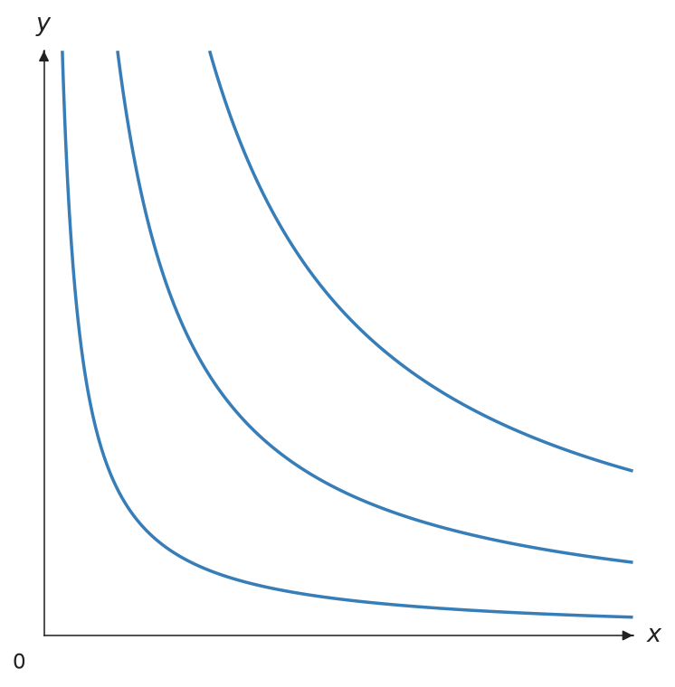
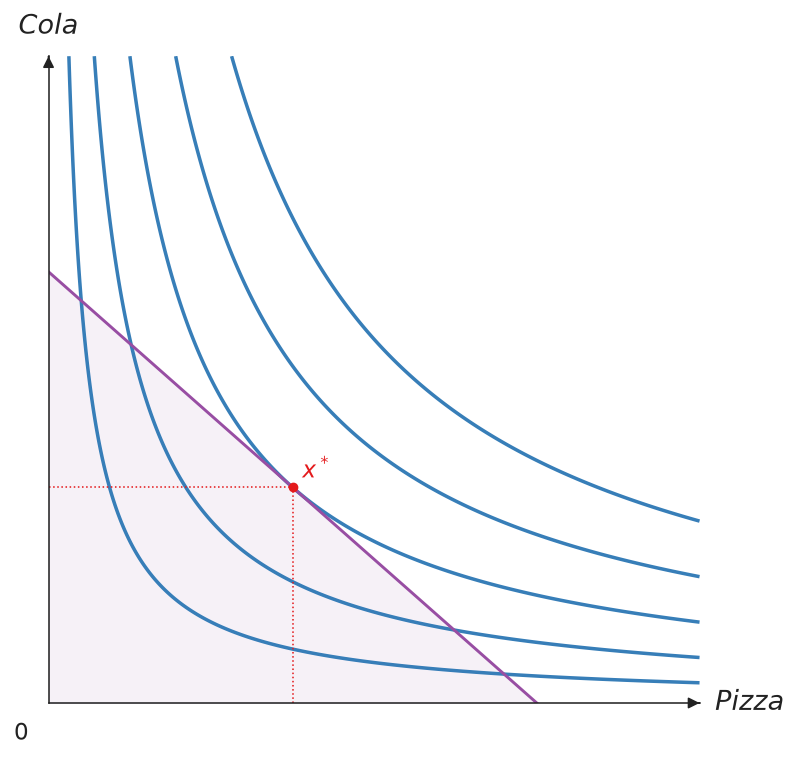
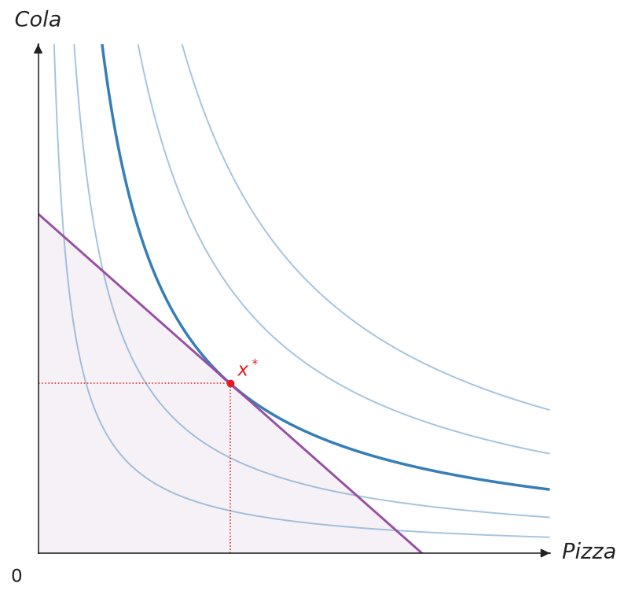
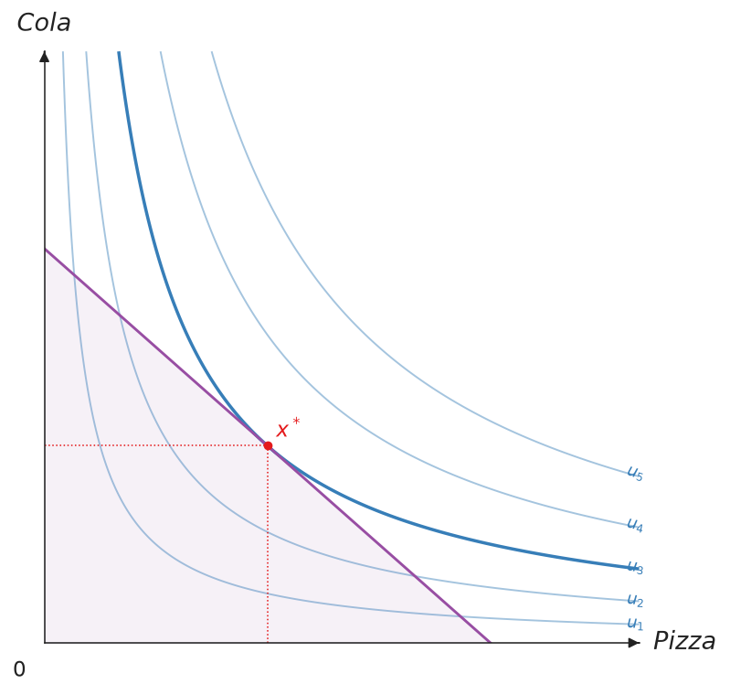
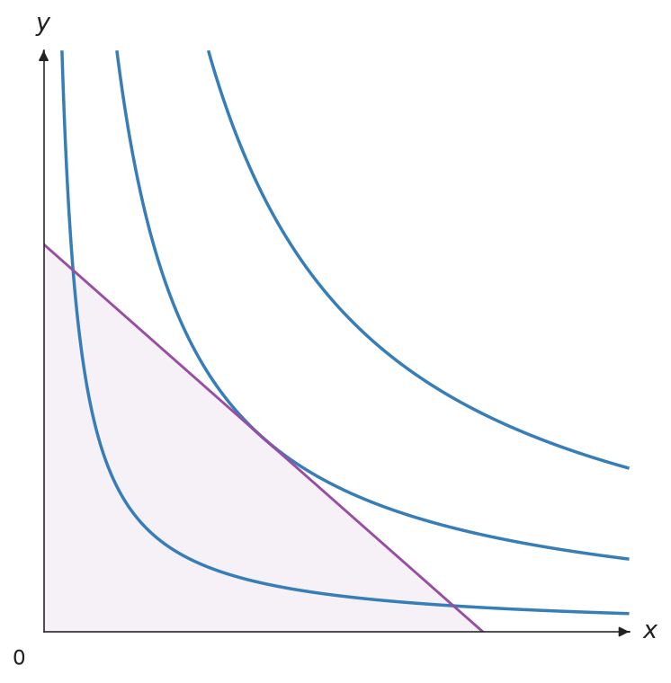
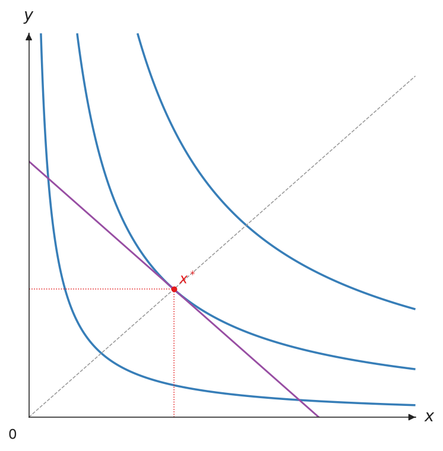
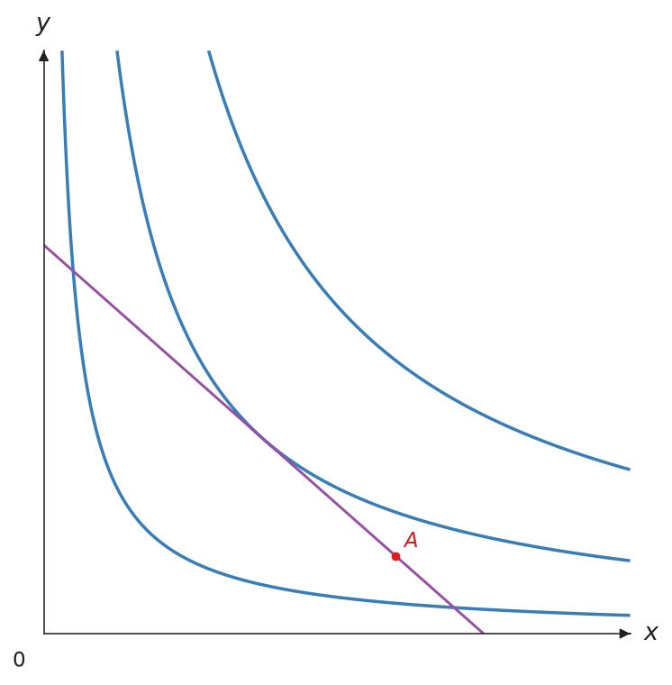
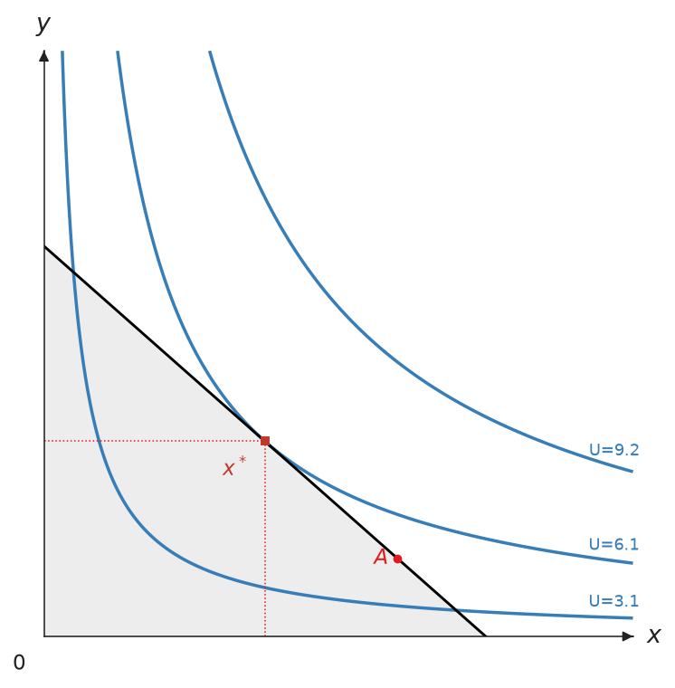
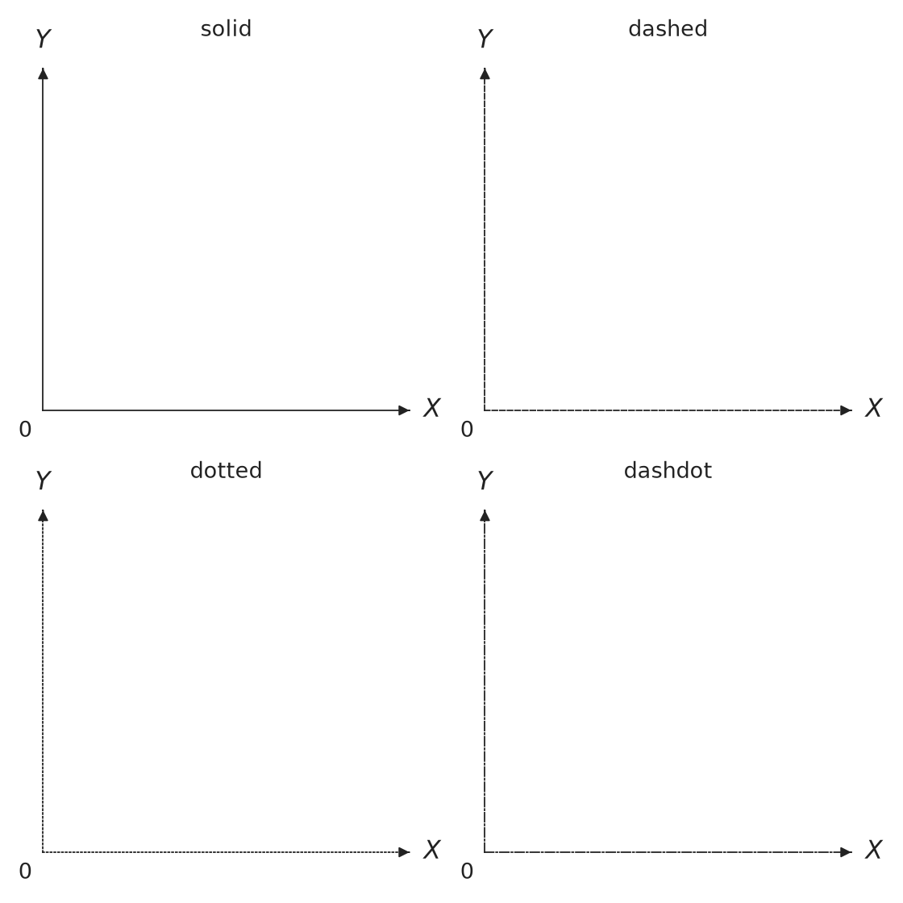
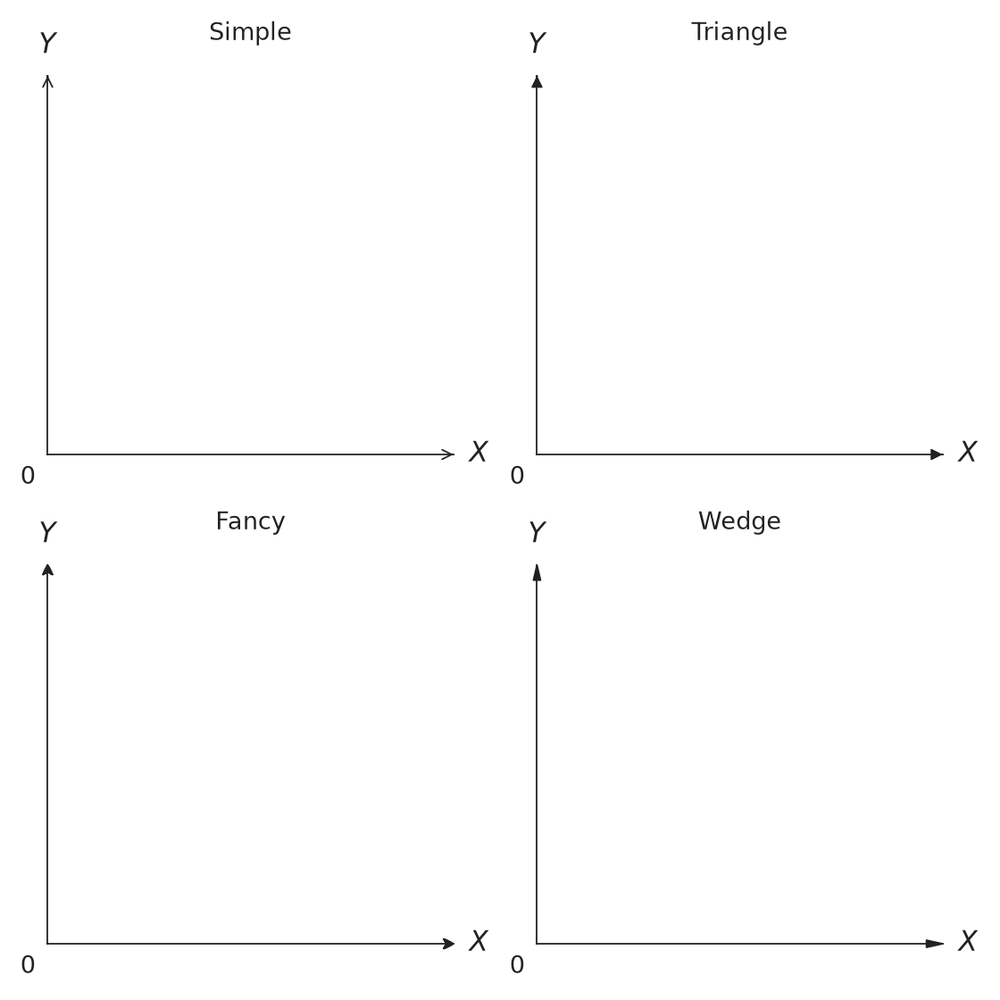

Canvas 畫布
Canvas 是核心的繪圖畫布。它管理一張 matplotlib 圖，樣式遵循個體經濟學教科書的慣例：只畫第一象限、座標軸末端有箭頭、標籤用 LaTeX 繪製、不顯示數字刻度。
建構函式
Canvas(
x_max: float,
y_max: float,
x_label: str,
y_label: str,
title: str | Label | None,
dpi: int,
x_label_pos: LabelPosition | str,
y_label_pos: LabelPosition | str,
theme: Theme | None,
font: str | Sequence[str] | None,
math_font: str | None,
axis_stroke: Stroke | None,
x_axis_stroke: Stroke | None,
y_axis_stroke: Stroke | None,
x_axis: Axis | None,
y_axis: Axis | None,
) → Canvas橫軸上限
縱軸上限
橫軸 Axis(label=...) 的簡寫
縱軸 Axis(label=...) 的簡寫
圖形標題
點陣匯出解析度（限制在 1–1200）
Axis(label_position=...) 的簡寫：箭頭上方、右側或下方
Axis(label_position=...) 的簡寫：箭頭左側、上方或右側
配色與樣式主題
所有文字使用的字體或候補字體列表
數學字體：dejavusans、dejavuserif、cm、stix 或 stixsans
同時設定兩軸的粗細、線條樣式、顏色與箭頭樣式
橫軸的個別覆寫，是 Axis(stroke=...) 的簡寫
縱軸的個別覆寫，是 Axis(stroke=...) 的簡寫
橫軸的標籤、標籤位置與線條
縱軸的標籤、標籤位置與線條
查看範例
from utility_viz import ArrowStyle, Axis, Canvas, Stroke, themes
cvs = Canvas(
x_max=20,
y_max=15,
title=r"Cobb-Douglas $x^{0.5} y^{0.5}$",
dpi=300,
font="DejaVu Sans",
math_font="stix",
axis_stroke=Stroke(width=1.0, arrow=ArrowStyle.TRIANGLE),
# "top"、"right" 或 "bottom"
x_axis=Axis(label="x", label_position="right"),
# "left"、"top" 或 "right"
y_axis=Axis(label="y", label_position="top"),
theme=themes.default,
)
同一項設定給了兩次時，以 Axis 的欄位為準。座標軸線條的優先順序由高到低是 Axis.stroke、x_axis_stroke、axis_stroke、x_line_style / x_arrow_style、theme.axis_stroke。
方法
所有繪圖方法都會回傳 self，所以可以串接呼叫。
效用曲線
畫出效用函數的無異曲線。levels 傳入整數會自動決定曲線的間距，也可以傳入一串效用值，例如用 levels.around(eq.utility, n=5) 讓曲線分布在最適點周圍。
Canvas.add_utility(
func: Callable,
levels: int | list,
color: str | None,
linewidth: float | None,
show_rays: bool,
show_kinks: bool,
kink_radius: float,
show_bliss: bool,
label: str | None,
show_ic_labels: bool,
ic_label_fmt: str,
stroke: Stroke | None,
ray_stroke: Stroke | None,
kink_marker: Marker | None,
bliss_marker: Marker | None,
ic_label: Label | None,
bliss_label: str | Label | None,
highlight_level: float | None,
secondary_stroke: Stroke | None,
label_style: str,
**kwargs,
) → Canvas要繪製的效用模型。
曲線數量，或指定的效用水準列表。
覆寫顏色；未指定時沿用主題。
覆寫線條粗細；未指定時沿用主題。
為具有折點的效用模型畫出折點軌跡射線。
標出各條無異曲線的折點。
折點標記的大小倍率。
若模型具有極樂點，顯示其標記。
可選的 LaTeX 數學標籤。
在曲線末端顯示效用標籤。
數值效用標籤的格式字串。
線條樣式，優先於個別的顏色、粗細與線型簡寫。
射線的線條樣式；未指定時沿用主題。
折點標記樣式；未指定時沿用主題。
極樂點標記樣式；未指定時沿用主題。
無異曲線末端標籤的樣式。
極樂點的文字或 Label 物件。
強調最接近此效用水準的曲線。
主要曲線以外的次要曲線樣式。
使用 numeric 數值或 ordinal 教科書式序數標籤。
傳給底層繪圖或匯出函式的其他選項。

主要與次要曲線
把均衡效用傳給 highlight_level，即可強調最接近的效用水準，不需要自己再畫第二組等高線。其餘曲線使用 theme.secondary_ic_stroke，也可用 secondary_stroke 個別指定。
from utility_viz import Canvas, Stroke, levels, solve
from utility_viz.models import CobbDouglas
model = CobbDouglas(0.5, 0.5)
eq = solve(model, px=2, py=3, income=30)
lvls = levels.around(eq.utility, n=5)
(
Canvas(x_max=20, y_max=15)
.add_utility(
model,
levels=lvls,
highlight_level=eq.utility,
secondary_stroke=Stroke(width=1, opacity=0.35),
show_ic_labels=True,
label_style="ordinal",
)
.add_budget(2, 3, 30, fill=True)
.add_equilibrium(eq)
)
label_style="numeric" 顯示格式化後的效用值；"ordinal" 則使用教科書常見的 \(u_1,u_2,\ldots\)。標籤會跟隨曲線在該處的角度，並避開可見範圍的邊界。

強調前——每個效用水準的視覺權重相同。
強調後——均衡效用水準成為主要曲線。
序數標籤——曲線標為 \(u_1,u_2,\ldots\)。
預算線
畫出預算線 \(p_x x + p_y y = I\)。設定 fill=True 會在預算線下方的可行集合加上陰影。
Canvas.add_budget(
px: float,
py: float,
income: float,
color: str | None,
linewidth: float | None,
linestyle: str | None,
label: str | None,
fill: bool | Fill,
fill_alpha: float | None,
stroke: Stroke | None,
) → Canvas商品 X 的價格，必須大於 0。
商品 Y 的價格，必須大於 0。
總預算，必須大於 0。
覆寫顏色；未指定時沿用主題。
覆寫線條粗細；未指定時沿用主題。
Matplotlib 線條樣式；未指定時沿用主題。
可選的 LaTeX 數學標籤。
設為 True 填滿可行集合，或傳入 Fill 指定顏色與透明度。
填色透明度；Fill 中的透明度設定優先。
線條樣式，優先於個別的顏色、粗細與線型簡寫。
查看範例
from utility_viz import Canvas
cvs = Canvas(x_max=20, y_max=15)
cvs.add_budget(px=2, py=3, income=30, fill=True)

均衡點
在最適消費組合畫上均衡點，並拉出到兩軸的垂直虛線。eq 傳入 solve() 的回傳值；show_ray=True 會一併畫出通過原點的擴張路徑。
Canvas.add_equilibrium(
eq: Equilibrium,
color: str | None,
markersize: float | None,
label: str | Label | None,
drop_dashes: bool,
show_ray: bool,
drop_stroke: Stroke | None,
ray_stroke: Stroke | None,
marker: Marker | None,
) → Canvassolve() 回傳的均衡結果。
覆寫顏色；未指定時沿用主題。
標記大小；未指定時沿用主題。
可選的 LaTeX 數學標籤。
畫出通往兩軸的垂直輔助線。
畫出從原點通過均衡點的射線。
通往兩軸的輔助線樣式。
射線的線條樣式；未指定時沿用主題。
標記的顏色、大小與形狀；未指定時沿用主題。
射線
從原點畫一條斜率為 slope（\(\mathrm{d}y/\mathrm{d}x\)）的虛線射線，常用來表示擴張路徑或固定的消費比例。
Canvas.add_ray(
slope: float,
color: str | None,
linewidth: float | None,
stroke: Stroke | None,
) → Canvas射線斜率，以 \(\mathrm{d}y/\mathrm{d}x\) 表示。
覆寫顏色；未指定時沿用主題。
覆寫線條粗細；未指定時沿用主題。
線條樣式，優先於個別的顏色、粗細與線型簡寫。

標記點
標記任意一點，例如要跟最適點比較的消費組合。label 會以 LaTeX 數學模式顯示；要移動標籤或改樣式時，傳入 Label。
Canvas.add_point(
x: float,
y: float,
label: str | Label | None,
color: str | None,
markersize: float | None,
offset: tuple[float, float] | None,
marker: Marker | None,
) → Canvas點的水平座標。
點的垂直座標。
可選的 LaTeX 數學標籤。
覆寫顏色；未指定時沿用主題。
標記大小；未指定時沿用主題。
標籤位移 (dx, dy)，單位為點；Label 的位置或位移設定優先。
標記的顏色、大小與形狀；未指定時沿用主題。

顯示與儲存
show() 會開啟互動視窗。save() 依副檔名決定格式，支援 .png、.pdf、.svg，以及輸出 TikZ 的 .tex。save() 也會釋放 matplotlib 的資源，所以要放在最後呼叫。
Canvas.show() → None
樣式
每一類元素都有自己的樣式物件。沒有指定的欄位會沿用主題預設值，所以只要設定想改的部分。
線條粗細、線條樣式、顏色、箭頭
主題預設值 — theme.budget_stroke、theme.ic_stroke 等
點的顏色、大小、形狀
主題預設值 — theme.eq_marker、theme.point_marker 等
標籤文字、位置、位移、顏色、大小、是否顯示
主題預設值 — theme.point_label、theme.ic_label 等
陰影顏色與透明度
主題預設值 — theme.budget_fill
單一座標軸的標籤、標籤位置與線條
主題預設值 — 無
legend 的位置、大小、外框、欄數
主題預設值 — theme.legend
每個物件也都有 opacity，從 0（透明）到 1（不透明）。
from utility_viz import Canvas, Fill, Label, Marker, Stroke
(
Canvas(x_max=20, y_max=15)
.add_utility(
model,
levels=lvls,
ic_label=Label(text="U={:.1f}", position="top"),
)
.add_budget(
2.0,
3.0,
30.0,
stroke=Stroke(color="black"),
fill=Fill(color="lightgrey", opacity=0.4),
)
.add_equilibrium(
eq,
marker=Marker(color="#C0392B", shape="s"),
label=Label(position="bottom-left", offset=8),
)
.add_point(
12.0, 2.0, label=Label(text="A", position="left")
)
.save("styles.png")
)

建議用 Stroke 設定線條樣式。另外的 color、linewidth、linestyle 參數仍可當作簡寫使用，畫出來的結果相同。標籤預設沿用所屬點的 Marker 顏色，除非另外指定；位置可用 top、bottom、left、right 與 top-right 等四個角落，Label(visible=False) 可隱藏標籤。
文字與 legend
所有文字都能傳入 Label：座標軸標籤透過 Axis(label=...)，原點透過 origin_label，標題透過 title。legend 預設會放在最不擋到圖形的位置，四個角都會擋到時就移到圖外；也可以用 Legend 指定圖內的角落（"upper left" 等），或圖外的上下左右（"top"、"bottom"、"left"、"right"）。
from utility_viz import Axis, Canvas, Label, Legend
cvs = Canvas(
title=Label(text="Cobb-Douglas", fontsize=13),
x_axis=Axis(label=Label(text="x_1", fontsize=16)),
origin_label=Label(visible=False),
)
cvs.show_legend(legend=Legend(position="bottom", fontsize=10))
下方的線條樣式與箭頭樣式，座標軸透過 x_* 與 y_* 參數設定，其他線條則透過 Stroke 套用。
線條樣式
座標軸可使用 LineStyle.SOLID、DASHED、DOTTED 或 DASHDOT。也可以直接傳入對應的 solid、dashed、dotted 或 dashdot 字串。其他線條則透過 Stroke(style=...) 設定。
import matplotlib.pyplot as plt
from utility_viz import Canvas, LineStyle
styles = [
LineStyle.SOLID,
LineStyle.DASHED,
LineStyle.DOTTED,
LineStyle.DASHDOT,
]
fig, axes = plt.subplots(2, 2, figsize=(7, 7))
for ax, style in zip(axes.flat, styles):
Canvas(
title=style.value,
x_line_style=style,
y_line_style=style,
fig=fig,
ax=ax,
)
fig.tight_layout()
fig.savefig("line_styles.png", dpi=160, transparent=True)

箭頭樣式
座標軸可使用 ArrowStyle.SIMPLE、TRIANGLE、FANCY 或 WEDGE。其他可見線條則透過 Stroke(arrow=...) 加上相同的箭頭樣式。
import matplotlib.pyplot as plt
from utility_viz import ArrowStyle, Canvas
styles = [
ArrowStyle.SIMPLE,
ArrowStyle.TRIANGLE,
ArrowStyle.FANCY,
ArrowStyle.WEDGE,
]
fig, axes = plt.subplots(2, 2, figsize=(7, 7))
for ax, style in zip(axes.flat, styles):
Canvas(
title=style.name.title(),
x_arrow_style=style,
y_arrow_style=style,
fig=fig,
ax=ax,
)
fig.tight_layout()
fig.savefig("arrow_styles.png", dpi=160, transparent=True)

路徑、效果分解、DemandDiagram、Figure 與 EdgeworthBox 也可以使用 Stroke。沒有指定的欄位會沿用目前主題。
串接呼叫
Canvas(x_max=20, y_max=15).add_utility(
model, levels=lvls
).add_budget(2.0, 3.0, 30.0, fill=True).add_equilibrium(
eq, show_ray=True
).save(
"figure.png"
)